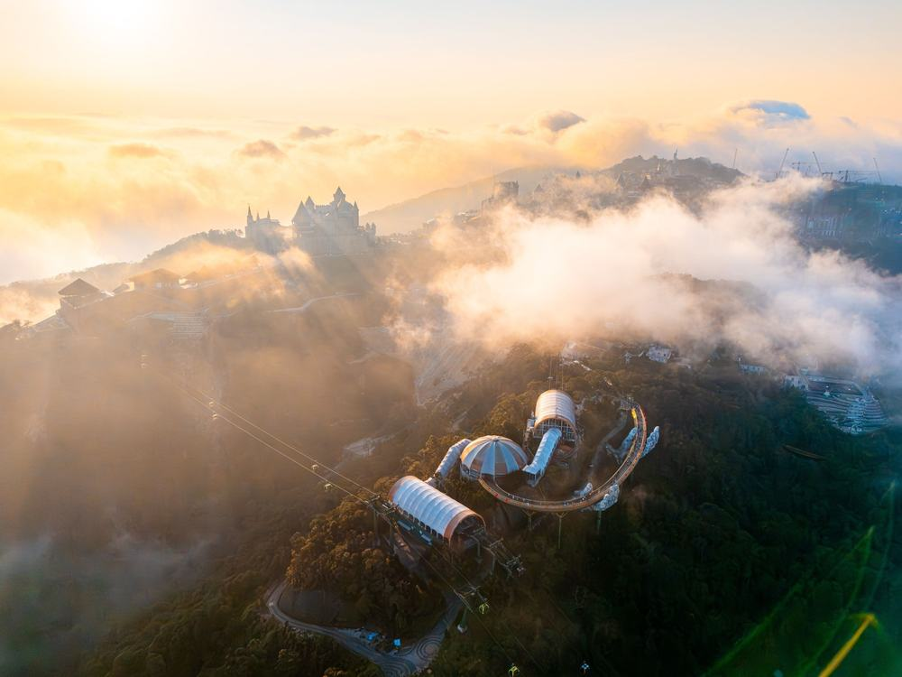
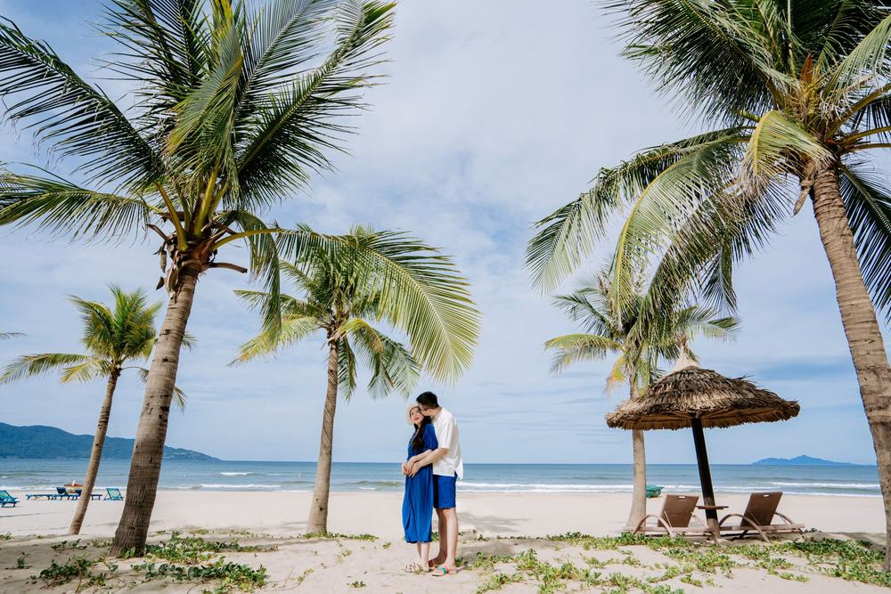
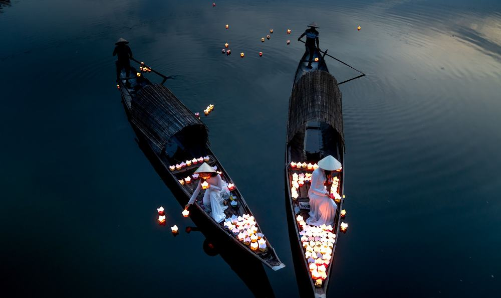
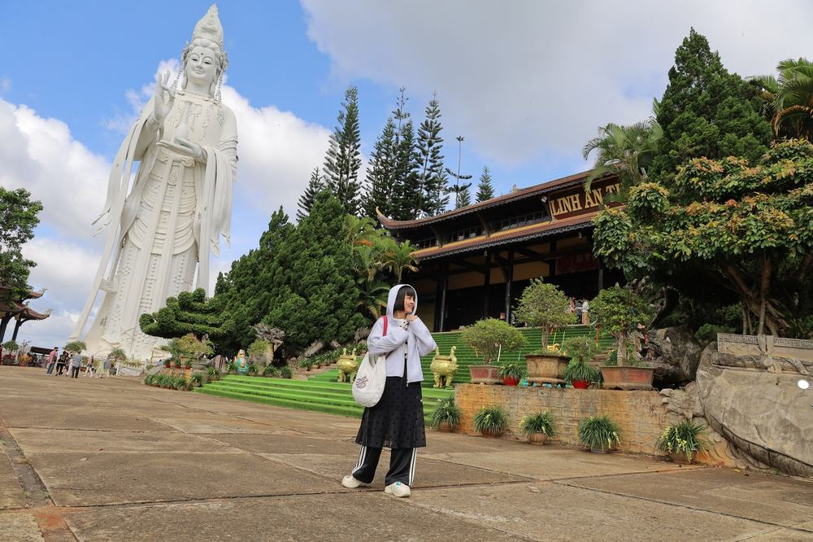
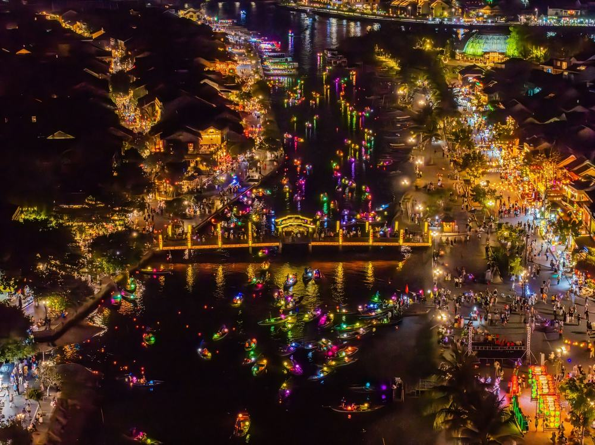

하나투어 다낭 패키지 여행 가격 32만원, 바나힐 골든브릿지까지 포함인 이유 (트리니티항공 직항 · 3박 5일)
결론 — 추천. 다낭이 처음이라 바나힐·호이안·시내를 한 번에 보고 싶은 분, 현지에서 돈 더 내라는 소리가 부담인 분에게 맞음. 밤 비행기가 힘든 분, 쇼핑 들르는 것 자체가 싫은 분은 고르면 안 됨.
가을에 부모님 짧게 보내드릴 데를 찾다가 32만 9천원짜리 다낭을 붙잡았음. 이 값이면 보통 바나힐이 빠지거나 현지에서 따로 받는데, 이건 케이블카까지 들어 있다고 적혀 있었음.
그래서 정말 들어 있는지, 대신 어디서 돈이 더 나가는지 항목별로 뜯어봤음.
| 항목 | 내용 |
|---|---|
| 여행사 | 하나투어 (하나팩 세이브) |
| 가격 | 329,000원 (1인 · 성인 기준 · 10월 출발) |
| 일정 | 3박 5일 · 밤 9시 35분 출발 |
| 항공 | 트리니티항공 직항 (인천-다낭 4시간 50분 · 기내식 유료) |
| 숙소 | 다낭 시내 4성 3박 (로열로터스 또는 동급 · 호텔 이동 없음) |
| 가는 곳 | 바나힐 테마파크·골든브릿지 · 호이안 올드타운 · 호이안 야경투어 · 마블마운틴 · 손짜 영응사 · 다낭 대성당 · 미케비치 |
| 반드시 더 내는 돈 | 가이드·기사 경비 40달러 (현지 지불) |
결론부터 말하면 같은 동선을 직접 짜면 20만원 넘게 더 듦. 바나힐·야경투어·마사지를 현지에서 따로 사면 그것만 1인 120달러인데, 이 셋이 상품가 안에 있음.
| 순서 | 다루는 것 | 한 줄 결론 |
|---|---|---|
| 1 | 구성 뜯어보기 | 스페셜 3종 포함 · 현지 필수는 40달러 하나 · 쇼핑 3회 |
| 2 | 일정 살펴보기 | 첫날은 이동만, 둘째 날 호이안, 셋째 날 바나힐 |
| 3 | 자유여행 VS 패키지 | 직접 짜면 65만원, 패키지는 경비까지 41만 5천원 |
1. 구성 뜯어보기
요약 — 항공·시내 4성 3박·식사 8회·관광 12곳 입장·바나힐·호이안 야경투어·마사지 60분·가이드·1억원 보험까지 32만 9천원. 현지에서 반드시 내는 건 가이드·기사 경비 40달러 하나. 다만 3일차 점심이 불포함이고 쇼핑이 3회 있음.
1-1. 값에 뭐가 들었나
1인 32만 9천원임. 3박 5일 기준임.
| 항목 | 상태 |
|---|---|
| 왕복 항공권 | 포함 (트리니티항공 직항 · 세금·유류할증 포함) |
| 다낭 시내 4성 3박 | 포함 (2인 1실 · 호텔 이동 없음) |
| 식사 8회 | 포함 (미케비치 씨푸드 · 호이안 가정식 · 삼겹살 · 반쎄오 · 한식) |
| 바나힐 테마파크 | 포함 (케이블카 5km · 골든브릿지 · 정상 자유시간) |
| 호이안 야경투어 | 포함 (소원배 · 소원등 · 야시장 · 음료 1잔) |
| 베트남 전통 마사지 60분 | 포함 |
| 관광 12곳 입장료 | 포함 (마블마운틴 엘리베이터 포함) |
| 한국어 가이드 · 전용 차량 | 포함 (가이드 미팅은 다낭 공항 도착 후) |
| 1억원 여행자보험 | 포함 |
| 가이드·기사 경비 40달러 | 불포함 (현지 지불 · 아동 30달러) |
| 3일차 점심 | 불포함 (바나힐 정상에서 개별) |
| 인솔자 | 불포함 (한국 출발부터 동행하는 인솔자는 없음) |
| 기내식 | 불포함 (LCC · 기내 구매) |
| 쇼핑 | 3회 (노니·침향·커피·기념품 · 회당 40~60분 · 환불 가능) |
| 선택관광 | 메뉴 있음 (권유 시간 있음 · 구매는 자유) |
베트남 패키지는 가이드·기사 경비를 현지에서 걷는 게 보통이고 이 상품도 그럼. 40달러면 우리 돈 5만 6천원 안팎임.
상품가에 이걸 더해서 1인 38만 5천원으로 보면 됨.
| 항목 | 금액 | 비고 |
|---|---|---|
| 가이드·기사 경비 | 40달러 (약 5만 6천원) | 필수 · 현지 지불 · 아동 30달러 |
| 3일차 점심 | 약 1만원 | 바나힐 정상 식당 기준 |
| 기내식 | 왕복 약 2만원 | 안 사면 0 |
| 선택관광 | 0 ~ 7만원 | 안 하면 0 (차밍쇼 30달러 · 메모리즈쇼 50달러 등) |
| 매너팁 | 자율 | 상품에 "지불 여부에 따른 불이익 없음"이라 적혀 있음 |
| 합계 (필수만) | 약 5만 6천원 | 점심·기내식까지 넣으면 약 8만 6천원 |

1-2. 이 상품의 핵심은 '스페셜 3종'임
상품 핵심포인트 칸에 스페셜포함이라고 따로 적힌 세 가지가 있음. 바나힐 테마파크, 호이안 야경투어, 베트남 전통 마사지 60분임.
이게 왜 중요하냐면, 같은 상품 선택관광표에 이 셋의 현지 판매가가 그대로 적혀 있기 때문임. 바나힐 70달러, 호이안 야경투어 30달러, 전통 마사지 60분 20달러임.
합치면 1인 120달러, 우리 돈 17만원쯤임. 32만 9천원짜리 상품에서 17만원어치가 이미 값 안에 있는 셈임.
어디서 확인하나 — 상품 페이지 「핵심포인트」에서 '스페셜포함' 항목을 찾음. 거기 적힌 이름과 「선택관광」 표에 적힌 이름을 대조하면, 포함인지 현지 판매인지가 갈림. 같은 이름이 양쪽에 있으면 포함이 맞음.

1-3. 식사 여덟 끼 중 빠지는 건 한 끼임
식사는 8회임. 2일차 호텔 조식, 점심 미케비치 씨푸드, 저녁 호이안 가정식. 3일차 조식, 저녁 삼겹살 정식. 4일차 조식, 점심 한식, 저녁 반쎄오 정식임.
빠지는 건 3일차 점심 하나임 — 바나힐 정상 자유시간에 각자 사 먹음. 테마파크 안에 식당이 여러 곳 있음.
어디서 확인하나 — 일정표 각 날 식사 칸에서 '불포함' 글자를 셈. 이 상품은 3일차 중식 한 곳임. LCC라 기내식도 유료이니 그것까지 셈.

1-4. 쇼핑 3회는 알고 가야 함
이 상품에서 제일 먼저 짚어야 할 건 쇼핑 3회임. 4일차 오후에 몰려 있고, 노니·침향·커피·기념품 계열임. 회당 40분에서 1시간임.
다만 상품에 환불 가능이라고 적혀 있음. 사는 건 자유고, 안 사도 됨.
어디서 확인하나 — 상품 페이지 「쇼핑」 칸에서 횟수와 '환불' 표시를 봄. 판매점 이름이 수십 개 나열돼 있어도 그건 후보 목록이고, 실제 방문 횟수는 맨 위 숫자임.
출발일별 요금 확인하기
https://naver.me/FEgoyveB
| 질문 | 답 |
|---|---|
| Q. 쇼핑 없나요? | 3회 있음. 4일차 오후, 회당 40~60분. 구매는 자유고 환불도 됨 |
| Q. 가이드 경비는 따로 내나요? | 냄. 1인 40달러를 현지에서 지불함. 상품가 밖임 |
| Q. 출발확정인가요? | 아님. 최소 4명이 모여야 출발함. 예약 후 담당자 확인에서 물어보면 됨 |
2. 일정 살펴보기
요약 — 1일차는 밤 비행기로 이동만. 2일차 오전 자유 후 11시 30분부터 씨푸드·마블마운틴·호이안·야경투어. 3일차 바나힐. 4일차 시내·쇼핑 후 새벽 비행기. 버스는 나흘에 약 5시간임.
| 일차 | 가는 곳 | 식사 | 숙소 |
|---|---|---|---|
| DAY 1 | 인천 21:35 출발 → 다낭 00:25 도착 · 가이드 미팅 · 호텔 | 없음 | 다낭 시내 4성 |
| DAY 2 | 오전 자유 · 마블마운틴 · 호이안 올드타운 · 호이안 야경투어 | 조식 · 씨푸드 · 호이안 가정식 | 다낭 시내 4성 |
| DAY 3 | 바나힐 케이블카·골든브릿지 · 정상 자유시간 | 조식 · 중식 불포함 · 삼겹살 정식 | 다낭 시내 4성 |
| DAY 4 | 손짜 영응사 · 다낭 대성당 · 미케비치 · 쇼핑 3회 · 다낭 01:25 출발 | 조식 · 한식 · 반쎄오 정식 | — |
| DAY 5 | 인천 08:15 도착 | 없음 | — |

2-1. 첫날은 이동만임
밤 9시 35분에 인천에서 떠서 자정 넘은 0시 25분에 다낭에 내림. 짐 찾고 나오면 현지 가이드가 기다리고 있음. 호텔에 들어가면 새벽임.
한국에서부터 같이 가는 인솔자는 없음. 인천공항 수속은 각자 하고, 만나는 건 다낭에 도착해서임.
2-2. 그래서 2일차 오전이 비어 있음
일정이 11시 30분부터 시작함. 새벽에 들어왔으니 늦게까지 자고 호텔에서 쉬라는 구성임. 밤 비행기의 보완이 여기 있음.
오후는 마블마운틴부터임. 대리석 산 다섯 개가 모인 오행산이고, 산속이 통째로 동굴임. 천장 구멍으로 햇빛이 기둥처럼 떨어지는 자리가 사진 명소임.
여기서 하나 알고 가야 함. 엘리베이터는 올라갈 때만 편도임. 내려올 때는 계단으로 걸어 내려옴.
호이안은 차가 안 들어가서 전 구간 도보임. 내원교·광조회관·턴키의 집·풍흥의 집까지 들어감.
어디서 확인하나 — 일정표 2일차에 '호이안 야경투어'가 적혀 있는지, 그 아래 '소원배 탑승, 소원등'까지 적혀 있는지 봄. '호이안 관광'만 적힌 상품은 낮에만 보고 오는 경우가 있음.

2-3. 3일차가 바나힐임
시내에서 45분 달려 바나힐로 감. 해발 1,487m 산꼭대기에 프랑스 사람들이 만든 휴양지임.
케이블카가 5km고 이십 분쯤 올라감. 중간에 내리면 골든브릿지고, 정상에는 유럽 성처럼 지은 테마파크와 자유시간이 있음.
바나힐은 산꼭대기라 시내보다 서늘함. 10월에도 긴팔 하나는 챙겨야 함.
| 일차 | 구간 | 시간 |
|---|---|---|
| DAY 1 | 공항 → 호텔 | 약 30분 |
| DAY 2 | 호텔 → 마블마운틴 → 호이안 → 다낭 | 약 1시간 30분 |
| DAY 3 | 호텔 → 바나힐 왕복 | 약 1시간 30분 |
| DAY 4 | 시내 · 쇼핑 → 공항 | 약 2시간 |
| 합계 | 약 5시간 30분 |
2-4. 4일차는 시내 돌고 새벽 비행기임
손짜 반도의 영응사에 베트남에서 제일 큰 해수관음상이 있음. 높이 67m, 건물 삼십 층쯤임. 관음상 맞은편으로 미케비치와 시내가 펼쳐짐.
다낭 대성당은 외부 관광만임. 상품 안내에 현지 사정으로 내부 관람이 어렵다고 적혀 있음. 사진 찍는 자리로 보면 됨.
오후엔 미케비치 해변 카페에서 음료 한 잔이 나오고, 쇼핑 3회를 하고, 반쎄오 정식을 먹고 공항으로 감.

| 질문 | 답 |
|---|---|
| Q. 많이 걷나요? | 2일차가 제일 많음. 마블마운틴은 내려올 때 도보, 호이안은 전 구간 도보임 |
| Q. 10월 다낭은 어떤가요? | 낮 30도 안팎으로 덥고 소나기가 짧게 지나감. 우산보다 얇은 우비가 나음 |
| Q. 비자 필요한가요? | 불필요. 무비자 45일. 다만 온라인 사전 입국신고서를 출발 72시간 전부터 작성해야 함 |
3. 자유여행 VS 패키지
요약 — 같은 동선을 직접 짜면 1인 65만원쯤 나오고, 패키지는 가이드 경비와 빠진 끼니를 더해 41만 5천원임. 패키지가 23만원쯤 쌈. 바나힐·야경투어·마사지 세 가지만 현지에서 사도 120달러이기 때문임.
같은 동선을 직접 짜면 얼마인지 계산해봤음. 패키지에 들어 있는데 자유여행이면 따로 내야 하는 돈까지 전부 넣었음. 환율은 1달러 = 1,400원으로 잡았음. 대부분 추정치라 근거 열에 적어 뒀음.
| 항목 | 자유여행 | 패키지 | 근거 |
|---|---|---|---|
| 왕복 항공 | 약 28만원 | 포함 | 인천-다낭 LCC 10월 야간편 왕복 25~35만원대 (항공권 비교 사이트 월별 조회 · 추정) |
| 시내 4성 3박 | 약 11만원 | 포함 | 다낭 시내 4성 2인 1실 1박 7~9만원 ÷ 2 × 3박 (추정) |
| 바나힐 케이블카 | 약 9만 8천원 | 포함 | 같은 상품 선택관광표 70달러 기준 |
| 호이안 야경투어 | 약 4만 2천원 | 포함 | 같은 상품 선택관광표 30달러 기준 |
| 전통 마사지 60분 | 약 2만 8천원 | 포함 | 같은 상품 선택관광표 20달러 기준 |
| 식사 8끼 | 약 10만원 | 포함 | 조식 3회 + 현지식 5끼 (씨푸드 특식 포함 · 추정) |
| 도시 간 교통 | 약 4만 2천원 | 포함 | 다낭-호이안 왕복 · 바나힐 왕복 차량 (2인 분할 · 추정) |
| 입장료 | 약 1만원 | 포함 | 마블마운틴 + 엘리베이터 + 호이안 올드타운 통합권 (추정) |
| 공항 ↔ 시내 | 약 1만 5천원 | 포함 | 다낭 공항-시내 왕복 차량 (2인 분할 · 심야 도착 기준) |
| 여행자보험 | 약 1만 5천원 | 포함 (1억원) | 3박 5일 기준 |
| 가이드·인솔자 | 없음 | 한국어 가이드 전 일정 (경비 40달러 현지) | 양쪽 다 40달러 기준으로 봄 |
| 합계 | 약 65만원 | 32만 9천원 + 가이드 경비 5만 6천원 + 점심·기내식 3만원 = 약 41만 5천원 | 쇼핑 제외 |
숫자만 보면 패키지가 23만원쯤 쌈. 바나힐·야경투어·마사지 세 가지가 자유여행으로는 제일 큰 항목이고, 그걸 상품가 안에 넣은 것임.
그리고 표에 못 넣은 게 있음. 심야 도착임. 자정 넘어 내려서 처음 가는 도시에서 차를 잡아 호텔까지 가는 일이, 부모님만 보내드릴 때는 생각보다 큼. 이 상품은 짐 찾고 나오면 가이드가 서 있음.

어디서 확인하나 — 자유여행으로 갈 거면 바나힐 공식 티켓값과 다낭-바나힐 왕복 차량비를 먼저 봄. 이 둘이 하루 예산의 절반을 먹음. 패키지에서는 「스페셜포함」에 바나힐이 있는지만 보면 됨.
| 자유여행이 맞는 사람 | 패키지가 맞는 사람 |
|---|---|
| 해변 리조트에서 종일 쉬고 싶음 | 바나힐·호이안·시내를 한 번에 다 볼 것임 |
| 그랩 부르고 흥정하는 게 재미있음 | 이동은 맡기고 앉아만 있고 싶음 |
| 쇼핑 들르는 게 싫음 | 쇼핑 3회는 감수하고 값을 아낄 것임 |
| 다낭을 두 번 이상 가봤음 | 부모님을 보내드림 |
| 질문 | 답 |
|---|---|
| Q. 환전은 얼마나 하나요? | 가이드 경비 40달러는 달러로 준비함. 나머지 개인 비용은 현지에서 동으로 바꿔 씀 |
| Q. 혼자 가면 얼마 붙나요? | 상품 페이지에 싱글룸 사용료가 따로 적혀 있지 않음. 예약 전화에서 확인해야 함 |
| Q. 아이 요금은요? | 소아 296,100원, 유아 150,000원임. 가이드 경비는 아동 30달러임 |
4. 정리
32만 9천원에 트리니티항공 직항, 다낭 시내 4성 3박, 식사 8회, 관광 12곳 입장료, 그리고 바나힐 케이블카·호이안 야경투어·마사지 60분까지 들어 있음.
현지에서 반드시 내는 건 가이드·기사 경비 40달러 하나임. 3일차 점심 한 끼와 기내식을 더해도 1인 8만 6천원 안쪽임.
같은 동선을 직접 짜면 65만원이 나와서 패키지가 23만원쯤 쌈. 값보다 더 큰 건 호텔을 한 번도 안 옮긴다는 것임. 3박을 한 곳에서 자니 짐을 한 번만 풂.
걸리는 건 밤 비행기, 쇼핑 3회, 3일차 점심 불포함, 인솔자 없음 이 넷임. 전부 상품 흠이 아니라 맞는 사람을 가르는 조건임. 밤 비행이 힘들면 오전 출발 상품을 보면 되고, 값을 아끼면서 바나힐까지 보는 게 목적이면 이 구성이 맞음.
출발일별 요금 확인하기
https://naver.me/FEgoyveB
같은 기준으로 다낭 패키지 고르는 법만 따로 정리한 글도 있음 — https://blog.naver.com/robotnady10/224421528304
함께 보면 좋은 글
노랑풍선 후쿠오카 99만원, 힐튼에 온천 호텔 두 밤, 대게 무한리필까지 되는 이유
https://blog.naver.com/robotnady10/224418265439
참좋은여행 하노이·하롱베이 49만원, 유람선에 마사지까지 선택관광 0인 이유
https://blog.naver.com/robotnady10/224417476056
이 글에는 제휴 링크가 포함되어 있으며, 링크를 통해 예약 시 일정 수수료를 받습니다. 가격은 동일합니다. 이 글은 10월 출발 기준이며, 출발일에 따라 가격이 달라집니다.
사진 출처: goldenbridge_1 — Pexels / banahill_cable_1 — Pexels / mykhe_1 — Pexels / hoian_oldtown_1 — Pexels / dn_lantern_boat_1 — Pexels / linhung_1 — Pexels / hoian_night_1 — Pexels